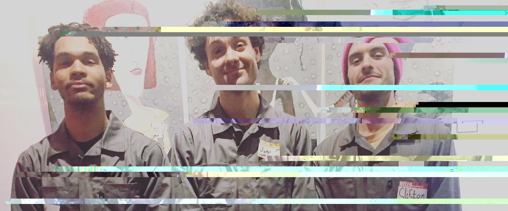
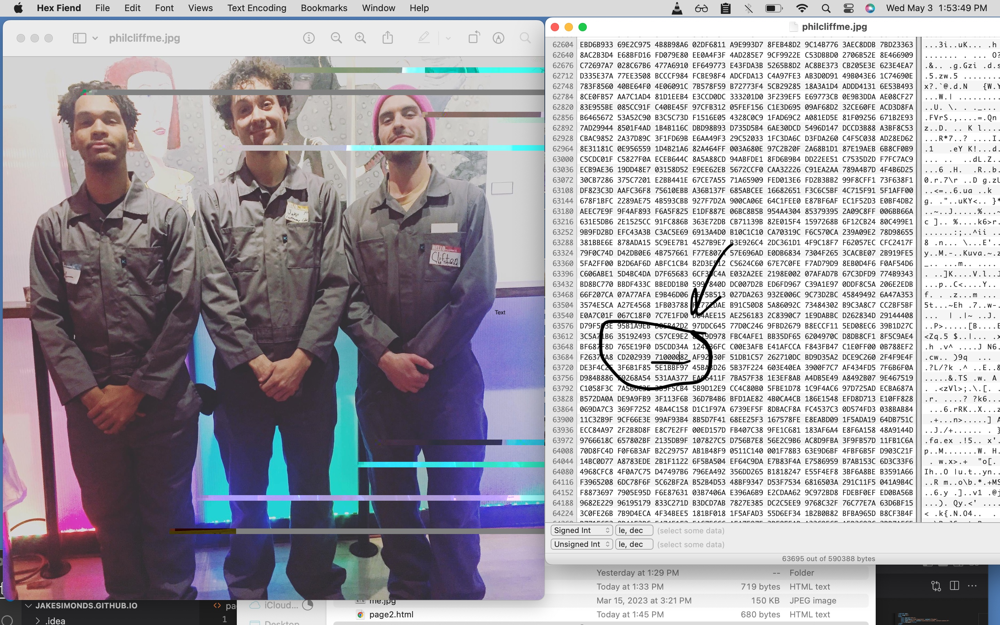
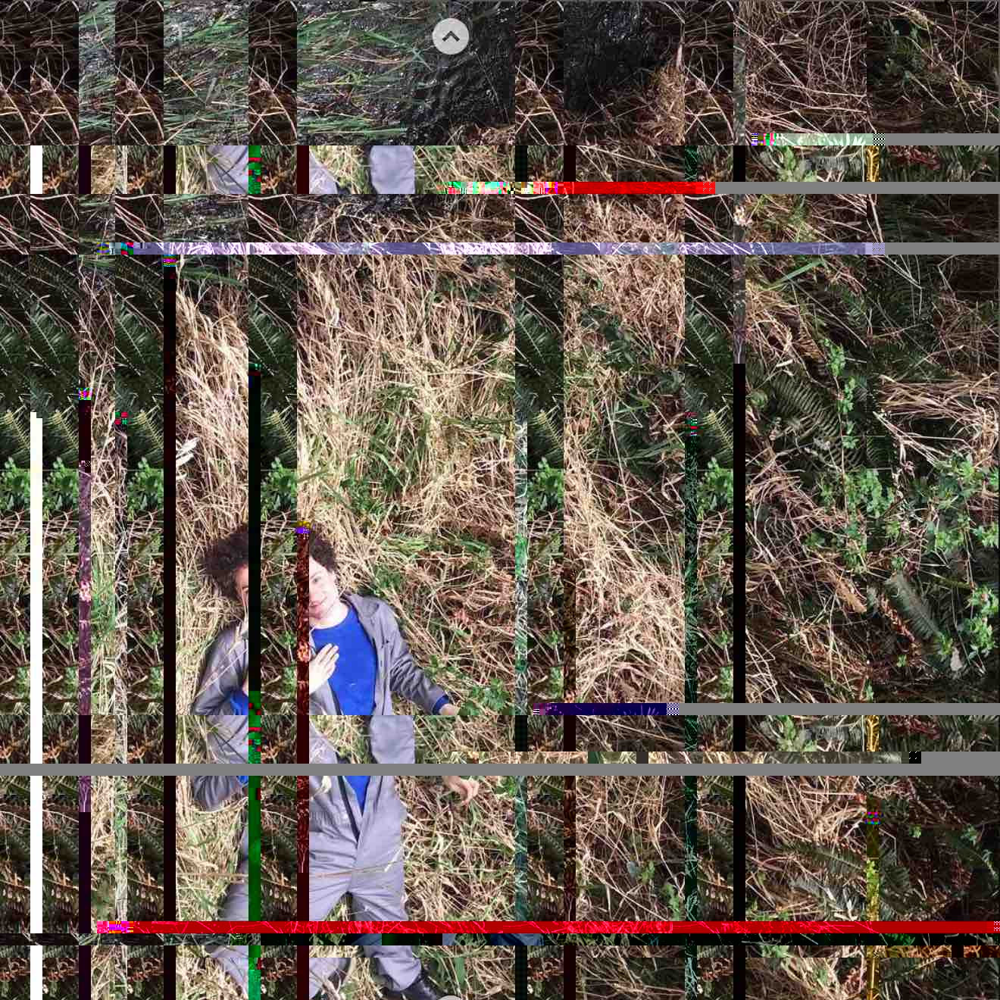

This is a jpg image I had on my computer, which I then opened with a hexidecimal text editor (so I could see (and read/write) the raw pixel data) and then edited to make what I think is called glitch art.
1: Find a photo you like. I grabbed this one from instagram, it's me and my friends Phil Johnson and Clifton Holznagel. We are at Artists Rep for some media night for Fertile Ground in 2019. We are wearing matching jumpsuits.
2: Open the photo either a text editor or a hex editor (I used "Hex Fiend"--mac-compatible, free, worked for me).
3(fun part): Mess around in the plaintext! Cut out a big chunk and then paste it somewhere else. Make sure to set up your workspace such that you can save and then see the results of your edits in real time.
How I worked was I made big random changes to the text and then saved so I could see my "results" in real time (and ctrl+Z back to safety when I messed up or corrupted the file). Above in the two screenshots you can see that by adding a single 00 character to this specific spot, the file corrupts in this specific way.
(Note: You don't strictly speaking need the hex editor, you can potentially just open the .jpg file in like textEditor or VIM, but then you're dealing with encryped whatever so I did appreciate the hex editor. Copy/pasting sections, adding stretches of FFFFFs or 00000s or whatever, and then after everything saving so I could see the "results" and ctrl+Z back to safety if it was trash or corrupted the file. I played around a little with .png, but this is .jpeg. Found it to be pretty resiliant, only thing to for-sure avoid is messing with the very top of the file, which has meta-data/instructions for the application, so small changes can be more catastrophic.)
4: Iterate until you have something you like!
